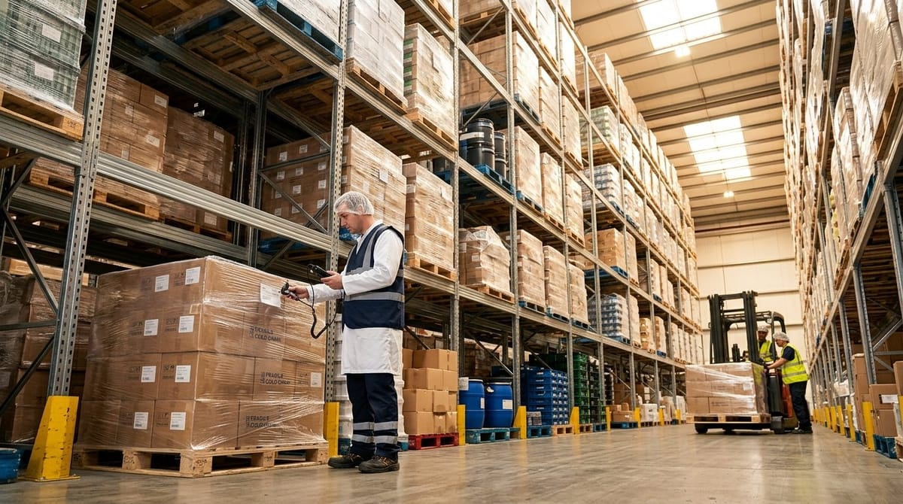

IFS Logistics: qué es y a quién exige certificarse

IFS Logistics: qué es y a quién exige certificarse
Si trabajas en el sector agroalimentario y tu empresa se encarga de almacenar, transportar o gestionar mercancía de alimentación, probablemente hayas escuchado hablar de IFS Logistics. Esta norma internacional se ha convertido en una referencia clave para todos los operadores logísticos que quieren demostrar que sus procesos cumplen con los más altos estándares de seguridad alimentaria. En este artículo te explicamos qué es exactamente, a quién aplica y qué requisitos debes tener en cuenta para afrontar con garantías una auditoría.
Qué es IFS Logistics y en qué se diferencia de IFS Food
IFS Logistics es una norma desarrollada por International Featured Standards (IFS, s.f.) específicamente para empresas que prestan servicios logísticos relacionados con productos alimenticios y otros bienes de consumo. Su objetivo es garantizar que las operaciones de transporte, almacenamiento y manipulación de alimentos se realizan de forma segura, higiénica y trazable, sin que el producto sufra alteraciones que puedan comprometer la seguridad del consumidor final.
La principal diferencia con IFS Food radica en el alcance de cada norma. Mientras que IFS Food está diseñada para empresas fabricantes o transformadoras de alimentos —es decir, para quienes elaboran o procesan el producto—, IFS Logistics se enfoca en la cadena de suministro posterior: el eslabón que conecta la fábrica con el punto de venta o consumo. En términos prácticos, si tu empresa no transforma el alimento pero sí lo transporta, almacena o distribuye, IFS Logistics es la norma que te corresponde.
Ambas normas comparten una filosofía común basada en la gestión del riesgo, la mejora continua y la evidencia documental, pero sus requisitos técnicos están adaptados a las realidades de cada actividad. IFS Logistics presta especial atención a aspectos como el control de temperatura durante el tránsito, la gestión de alérgenos en entornos multiproducto, la seguridad de la carga y la gestión de incidencias propias del sector logístico.
A quién le exige esta certificación: almacenes, transporte y operadores logísticos de alimentación
La certificación IFS Logistics está dirigida a cualquier empresa cuya actividad principal sea prestar servicios logísticos con productos alimenticios, aunque también aplica a empresas que manejen artículos de higiene o uso doméstico. Concretamente, los perfiles más habituales que optan por esta norma son:
- Operadores de almacenes y centros de distribución que almacenan alimentos a temperatura ambiente, refrigerada o congelada.
- Empresas de transporte terrestre, marítimo o aéreo de mercancías alimentarias, incluyendo transportistas de temperatura controlada.
- Operadores logísticos integrales que combinan almacenamiento, picking, preparación de pedidos y distribución.
- Brokers o agentes de carga que subcontratan el transporte pero asumen la responsabilidad sobre la cadena de frío y la trazabilidad.
¿Quién exige esta certificación? Habitualmente son los grandes distribuidores, cadenas de supermercados y retailers europeos los que la requieren como condición para trabajar con un proveedor logístico. Si tu cliente objetivo es un gran operador de la distribución organizada —especialmente en Alemania, Francia o el norte de Europa—, contar con la norma IFS Logistics alimentaria puede ser un requisito imprescindible para entrar o mantenerse en su panel de proveedores.
Los requisitos clave: trazabilidad, control de temperatura en tránsito y gestión de incidencias en almacén
Los requisitos IFS Logistics están estructurados en varios capítulos que abarcan desde el sistema de gestión de la calidad y la seguridad alimentaria hasta los requisitos operativos específicos. Aquí destacamos los tres pilares que más atención requieren durante la auditoría:
Trazabilidad completa de la mercancía
La norma exige que la empresa sea capaz de rastrear cualquier lote de producto en todas las etapas bajo su responsabilidad: desde la recepción hasta la entrega. Esto implica disponer de registros completos de entradas, salidas, ubicaciones de almacenamiento y movimientos internos. La trazabilidad debe funcionar en ambas direcciones —hacia atrás y hacia adelante— y los registros deben estar disponibles de forma inmediata ante una auditoría o una alerta alimentaria, tal y como establece el Reglamento (CE) n.º 178/2002 (Reglamento [CE] 178/2002, 2002) como principio general de la legislación alimentaria europea.
Control de temperatura en tránsito
Para empresas que trabajan con productos refrigerados o congelados, el control de temperatura en tránsito es uno de los puntos más críticos y más evaluados durante la auditoría. IFS Logistics exige que existan procedimientos documentados para verificar y registrar las temperaturas de los vehículos y cámaras, tanto antes de la carga como durante el transporte. Los registros de temperatura deben conservarse y ser accesibles, y en caso de desviación, debe existir un protocolo claro de actuación.
Gestión de incidencias en almacén
La norma también requiere un sistema robusto para identificar, registrar y gestionar cualquier incidencia que afecte a la integridad o seguridad de la mercancía: roturas de cadena de frío, daños físicos, contaminaciones cruzadas, errores de picking o problemas de seguridad. Cada incidencia debe quedar documentada con su causa, las acciones correctoras adoptadas y la verificación de su eficacia. Este ciclo de mejora continua es fundamental para superar la auditoría con una puntuación satisfactoria.
Cómo prepara un software de calidad la evidencia documental para la auditoría IFS Logistics
Uno de los mayores retos a los que se enfrentan los responsables de calidad en empresas logísticas es la gestión de la documentación. Una auditoría IFS Logistics puede requerir revisar cientos de registros: temperaturas, fichas de proveedores, no conformidades, planes de formación, protocolos de limpieza de vehículos o registros de calibración de equipos. Hacerlo con hojas de cálculo o carpetas en papel multiplica el riesgo de que falle algo en el momento menos oportuno.
Un software de calidad especializado en la industria agroalimentaria como Solved permite centralizar toda esta documentación y gestionarla de forma estructurada y accesible. Estas son algunas de las funcionalidades que marcan la diferencia en la preparación de una auditoría IFS Logistics:
- Registro automatizado de temperaturas: integración con sensores y registradores para capturar datos en tiempo real y generar alertas inmediatas ante cualquier desviación.
- Gestión de no conformidades e incidencias: flujo de trabajo estructurado para registrar, asignar, resolver y verificar cada incidencia, con trazabilidad completa del ciclo.
- Control documental: versiones actualizadas de procedimientos, instrucciones y formularios, con control de acceso y registro de aprobaciones.
- Trazabilidad de lotes: consulta inmediata del histórico de movimientos de cualquier referencia o lote, en tiempo real y desde cualquier dispositivo.
- Gestión de auditorías internas: planificación, ejecución y seguimiento de auditorías previas que permiten identificar puntos débiles antes de que llegue el auditor externo.
Contar con toda la evidencia ordenada, actualizada y accesible en una sola plataforma no solo facilita la auditoría, sino que reduce el estrés del equipo de calidad y demuestra al auditor un nivel de madurez en la gestión que suma puntos positivos en la valoración final. En un entorno cada vez más exigente, donde los clientes demandan transparencia y los estándares no dejan de evolucionar, digitalizar la gestión de la calidad deja de ser una ventaja competitiva para convertirse en una necesidad.
Si tu empresa está en proceso de certificarse en IFS Logistics o quiere dar un salto en la digitalización de su sistema de calidad, en Solved podemos acompañarte en cada paso del camino.
Referencias
- International Featured Standards. (s.f.). IFS Certification. https://www.ifs-certification.com/
- Reglamento (CE) n.o 178/2002 del Parlamento Europeo y del Consejo, de 28 de enero de 2002, por el que se establecen los principios y los requisitos generales de la legislacion alimentaria. (2002). https://eur-lex.europa.eu/eli/reg/2002/178/oj?locale=es